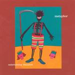

| Artist: | Metaphor |
| Title: | Entertaining Thanatos |
| Label: | Trope Audio TA 042 |
| Length(s): | 57 minutes |
| Year(s) of release: | 2004 |
| Month of review: | [05/2004] |
| 1) | Socrates | 7.59 |
| 2) | Galatea 3.3 | 7.43 |
| 3) | When It All Comes Together | 4.17 |
| 4) | Raking The Bones | 7.43 |
| 5) | Call Me Old And Uninspired Or Maybe Even Lazy And Tired But Thirteen Heads In The Backyard Says You're Wrong | 3.33 |
| 6) | Yes & No | 17.49 |
| 7) | Wheel Of The World | 7.55 |
Galatea 3.3 on the other hand opens in jazzy form, with a new lighthanded drummer. Some nice mellotron in the opening here too. Are we starting to think Watcher Of The Skies yet? For that the jazziness is too pronounced to be honest. The vocals are not really similar to Gabriel, I tend to think more of No-Man's Tim Bowness, although his voice is more velvety. Of course, when we come to the more proggy elements of the song where the vocalist starts to grind, but also when his melancholy voice continues down a more melodic street, these similarities are soon lost. The overall structure of the song seems a bit of a jumble to me in places, notwithstanding some very nice moments.
We continue with When It All Comes Together, based on a light theme, which dances throughout. The musical intermezzo sound rather harried, especially compared to the melancholy, fluent vocal parts. Again, the song makes little sense to me (I know how subjective that is), but again I get the impression of somewhat randomly juxtaposed passages, where maybe repetition is supposed to become a kind of glue.
Raking The Bones is based on the Finnish Kalevala epic. Again, there is a strong jazzy undercurrent, although do not think we are ever approaching jazzrock. Ah finally, I recall what the vocals remind me off, Galahad's Stu Nicholson (although a tad less sharp). In fact, Metaphor is in ways quite similar to Galahad on their debut Nothing Is Written: a strongly derivative sound, but different enough vocals, and some nice ideas in there too, although songs as a whole fail to entice me. Halfway the song we move into Gentle Giant area, with some Giantesque vocals.
Call Me Old And Uninspired Or Maybe Even Lazy and Tired But Thirteen Heads In The Backyard Says You're Wrong is certainly the shortest song on this album. A weird and off-beat tune, where jazzrock and prog meet, or maybe I should say "run into eachother". Some nice power chords and organ in here, but of course the band refuses to go the easy way.
Yes & No has the shortest title, but it is by far the longest song. We start with acoustic guitar, and lyrics where the plaintive voice (the role of Arjuna) reminds of Castanarc. The band seems to take a bit more time evolving things and letting them take their course and my apprecation for the music rockets. The ideas are there, but they need some channeling, which occurs here better than in other places in my opinion. In between parts we have some fiddling on the flutey organ. A relaxed piece of work follows with the bass doing a laying the groundwork, after which the church organ takes over to bring in some more melody. Arjuna returns for some vocals, after which Krishna rounds off the story in his off-beat way. The second part, an afterbirth of some kind, has something of a national anthem. Now all it needs is an country. Seriously though this is a great piece of music, and the poetic lyrics are good too. Turns out the theme is by Gustav Holst. By far the best song, and fortunately also the longest, so far.
Final track is Wheel Of The World opening with dark piano, a bit in the dark vein of Peter Hammill. The rhythms are laid back, a bit triphoppy. Of course, there is no mistaking the Banksian keyboards, but pay attention to the Crimsonesque tension on this one. The tension goes out a bit with time, and the instrumentalist becoming more meandering. Quite a bit of Genesis here too, but always in a 'good' way. The conclusion is a nice one, with some sax setting in for variety as well.